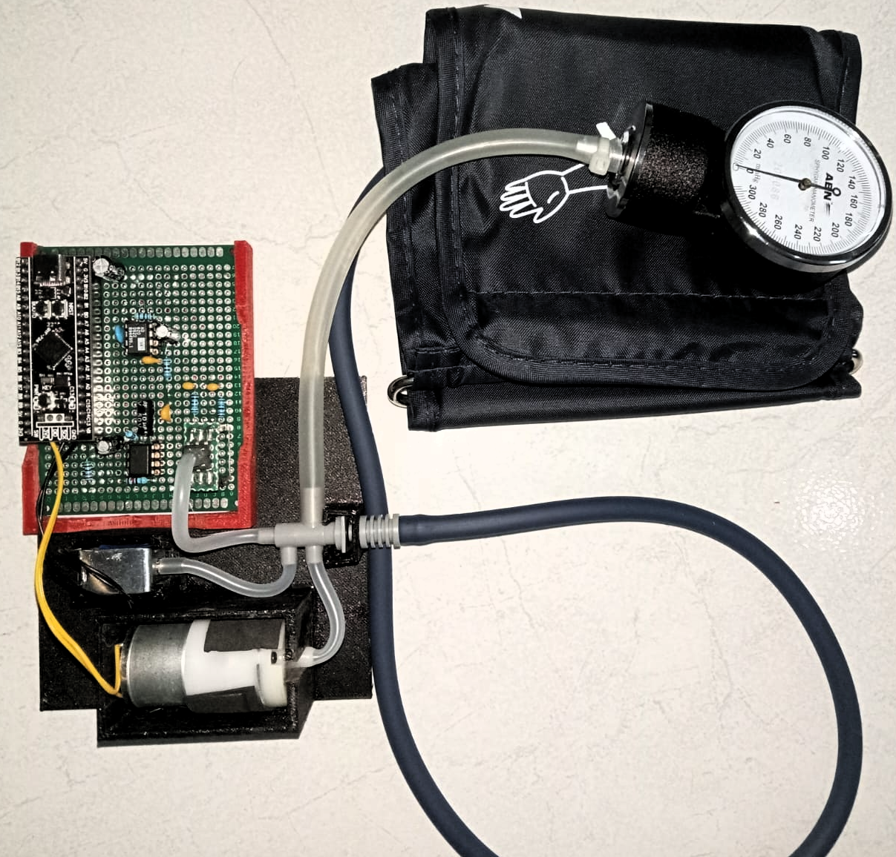

CuffnCode
Sistem pengukur tekanan darah retrofitted untuk pengajaran dan penelitian. Platform over-instrumented untuk pengembangan algoritma signal processing dan control.
STM32F411CE AD620 Oscillometric IFAC Funded
Tentang Proyek
CuffnCode adalah sistem pengukur tekanan darah (sphygmomanometer) yang di-retrofit untuk keperluan pengajaran dan penelitian di bidang teknik kontrol dan pemrosesan sinyal. Proyek ini menggunakan komponen yang mudah didapat di pasar Indonesia dan dirancang agar dapat direproduksi dengan mudah.
Sistem ini menggunakan sensor tekanan MPS20N0040D (millivolt bridge sensor) dengan Analog Front End (AFE) berbasis AD620 (instrumentation amplifier) dan TLC2272 (level shifter). Digital controller menggunakan STM32F411CE (Black Pill) dengan firmware yang menerapkan algoritma oscillometric untuk menentukan tekanan sistolik, diastolik, MAP, dan heart rate.
Fitur Utama
Analog Front End
Low-noise AFE dengan AD620 gain ~105x dan TLC2272 level shift ~1.5V. Simulasi dan validasi dengan TINA-TI.
Sampling 1kHz
ADC 12-bit dengan DMA double buffer dan timer trigger. Sampling rate 1000 sampel/detik untuk resolusi tinggi.
Digital Filtering
Low-pass FIR, band-pass IIR, moving average, dan notch filter 50/60Hz untuk menghilangkan noise dan hum.
Oscillometric Method
Algoritma oscillometric untuk menentukan SBP, DBP, MAP, dan Heart Rate secara akurat.
UART Interface
Output data real-time via UART dalam format CSV dan JSON. Command interface untuk kontrol sistem.
Safety System
Proteksi over-pressure, timeout pompa, dan emergency deflation untuk keamanan pasien.
Retrofitted Pump System
Sistem ini menggunakan cuff tensimeter dewasa standar yang di-retrofit dengan pompa mini dan katup solenoid yang dikontrol secara elektronik. Pompa mengembangkan cuff hingga tekanan ~180 mmHg, kemudian katup membuka secara bertahap untuk deflasi terkontrol.

Struktur Proyek
Mulai Cepat
Rencana Pengembangan
- ✅ Analog Front End design & simulation
- ✅ Firmware dasar (ADC, pump, valve control)
- ✅ Algoritma oscillometric dasar
- ⬜ Notch filter 50/60 Hz (hum killer)
- ⬜ Layout PCB
- ⬜ Evaluasi performa & kalibrasi
- ⬜ GUI desktop untuk data logging
- ⬜ Wireless data transmission (Bluetooth)
Keamanan
- Proteksi timeout pompa (30 detik maksimal)
- Emergency deflation via valve quick-dump
- Ground noise dari USB — ferrite pada kabel USB disarankan
- Alat ini untuk tujuan pengajaran dan penelitian, bukan untuk diagnosis medis